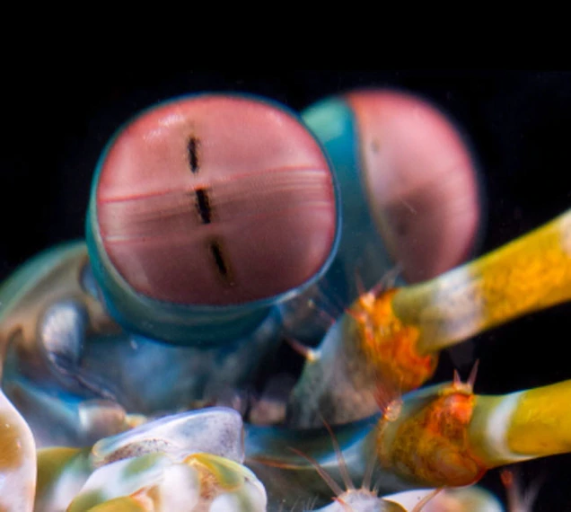

Fatos sobre o Stomatopoda
Classificação científica
| Reino | Animalia |
|---|---|
| Filo | Arthropoda |
| Subfilo | Crustacea |
| Classe | Malacostraca |
| Subclasse | Hoplocarida |
| Ordem | Stomatopoda |
| Nome científico | Odontodactylus scyllarus |
O Stomatopoda possui a melhor visão de todo o reino animal
Esses animais possuem o mais complexo sistema de visão de cores do mundo animal, pois enxergam 12 cores primárias, correspondentes aos 12 pigmentos distintos presentes em sua retina.
Nossos olhos possuem três tipos desses receptores - que correspondem à luz azul, verde e vermelha -, que nos permitem perceber o espectro de cores que vemos. O sistema de visão dos estomatópodes possui doze cones sensíveis à luz e outros quatro que filtram a luz (16 cones no total), o que lhes permite ver cores polarizadas e imagens multiespectrais.
Como cada cone pode ver cerca de 100 cores, os estomatópodes são capazes de ver 1024 cores, ou seja, 1 septilhão de cores. Em comparação, o olho humano vê 106 cores, ou seja, 1 milhão de cores apenas. A visão dos estomatópodes é sensível à luz ultravioleta, mas ainda é desconhecido se ela pode distinguir a luz infravermelha.
O Stomatopoda possui o soco mais poderoso do reino animal
Os Stomatopodas são capazes de desferir um dos mais rápidos e violentos golpes do reino animal, seu soco foi registrado com uma velocidade de 80 km/h e aceleração similar a uma arma calibre .22. A força do impacto do soco é de 60 kg/cm². Essa força esmagadora é a responsável pelo seu título de "lagosta-boxeadora" e é capaz de facilmente quebrar a carapaça de um caranguejo, as conchas duras e calcificadas de gastrópodes ou até mesmo quebrar o vidro reforçado de um aquário.
O ataque é tão rápido que ferve a água entre o camarão e sua presa, produzindo bolhas de cavitação. Quando as bolhas entram em colapso, a onda de choque resultante atinge a presa com uma força instantânea de 1.500 newtons . Portanto, mesmo que o camarão erre seu alvo, a onda de choque pode atordoá-lo ou matá-lo. A bolha em colapso também produz luz fraca, conhecida como sonoluminescência. Presas típicas incluem peixes, caramujos, caranguejos, ostras e outros moluscos. Os camarões louva-a-deus também comem membros de sua própria espécie.
Referências Bibliográficas
- https://www.nationalgeographic.com/science/article/natures-most-amazing-eyes-just-got-a-bit-weirder
- https://www.nationalgeographic.com/science/article/the-mantis-shrimp-has-the-worlds-fastest-punch
- https://theoatmeal.com/comics/mantis_shrimp
- https://pt.wikipedia.org/wiki/Stomatopoda